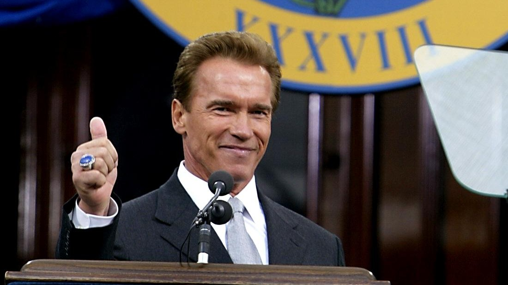

Governor of California
Arnold ran as a Republican candidate in the 2003 California Recall Election on Jay Leno. He is fiscally conservative and socially liberal. On the matter of gay rights, he is a proponent of it. He even performed a same-sex marriage as Governor. He also pro-choice on the abortion front which is quite against the usual Republican stance. During his announcement he was dubbed the “Governator” in reference to James Cameron’s The Terminator in which he played the role of The Terminator. During his run to become governor, Arnold refused to participate in any debates and ended up only appearing in one in September 2003. Schwarzenegger won the election ballot with 48.6% of the votes which was roughly 1.3million votes.
He ran for re-election in 2006 and won the vote by an astounding 56%, proving to be increasingly popular amongst voter even in what was a poor year for the Republican party. Schwarzenegger stated that it was never his intention to get into politics but married into a political family and was exposed to the idea of it through them. During his terms as governor of California, he never accepted his salary and instead had it donated to local charities. Unfortunately for Arnold, we won’t be seeing him run for president anytime soon as he doesn’t qualify. To run for president, he would have needed to be born in America. Who knows what would happen if he could, he’d certainly get my vote over Trump any day!
